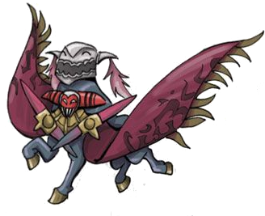
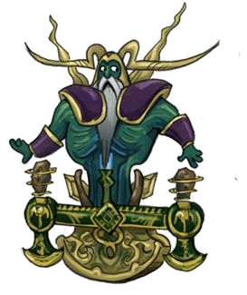
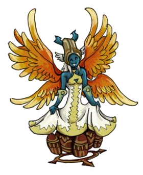

<div class="header bg-gradient-danger pb-3 pt-2 pt-md-6"></div>

<div class="container mt-2">
  <ul class="nav nav-tabs" id="myTab" role="tablist">
    <li class="nav-item">
      <a
        class="nav-link active"
        id="weapon-tab"
        data-toggle="tab"
        href="#weapon"
        role="tab"
        aria-controls="weapon"
        aria-selected="true"
        >1 - 9</a
      >
    </li>
    <li class="nav-item">
      <a
        class="nav-link"
        id="greatswords-tab"
        data-toggle="tab"
        href="#greatswords"
        role="tab"
        aria-controls="greatswords"
        aria-selected="true"
        >10 - 19</a
      >
    </li>
    <li class="nav-item">
      <a
        class="nav-link"
        id="katana-tab"
        data-toggle="tab"
        href="#katana"
        role="tab"
        aria-controls="katana"
        aria-selected="true"
        >20 - 29</a
      >
    </li>
    <li class="nav-item">
      <a
        class="nav-link"
        id="ninja-tab"
        data-toggle="tab"
        href="#ninja"
        role="tab"
        aria-controls="ninja"
        aria-selected="true"
        >30 - 39</a
      >
    </li>
    <li class="nav-item">
      <a
        class="nav-link"
        id="spears-tab"
        data-toggle="tab"
        href="#spears"
        role="tab"
        aria-controls="spears"
        aria-selected="true"
        >40
        - 45</a
      >
    </li>
  </ul>

  <!-- TAB_CONTENT -->
  <div class="tab-content" id="myTabContent">
    <!-- SWORD -->
    <div
      class="tab-pane fade show active"
      id="weapon"
      role="tabpanel"
      aria-labelledby="weapon-tab"
    >
      <div class="container m-2">
        <h2>One-Handed Swords</h2>
        <h4>
          One-handed Swords are the primary weapons of the Knight, Time
          Battlemage and Bushi job classes.
        </h4>
      </div>
     Aqui
    </div>
  </div>
</div>
